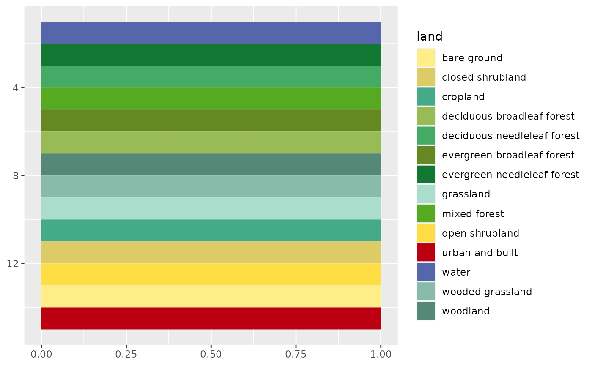

AVHRR Global Land Cover Classification Colour Scheme for ggplot2 and ggraph
Source:R/scale_colour_science.R
scale_land.RdProvides the AVHRR Global Land Cover classification as modified by Paul Tol (colorblind safe).
Usage
scale_colour_land(..., lang = "en", aesthetics = "colour")
scale_color_land(..., lang = "en", aesthetics = "colour")
scale_fill_land(..., lang = "en", aesthetics = "fill")
scale_edge_colour_land(..., lang = "en")
scale_edge_color_land(..., lang = "en")
scale_edge_fill_land(..., lang = "en")Arguments
- ...
Arguments passed on to
ggplot2::discrete_scale().- lang
A
characterstring specifying the language for the color names (see details). It must be one of "en" (english, the default), "fr" (french) orNULL. If notNULL, the values will be matched based on the color names.- aesthetics
A
characterstring or vector of character strings listing the name(s) of the aesthetic(s) that this scale works with.
Value
A discrete scale.
References
Tol, P. (2018). Colour Schemes. SRON. Technical Note No. SRON/EPS/TN/09-002, issue 3.1. URL: https://personal.sron.nl/~pault/data/colourschemes.pdf
See also
Other themed colour schemes:
scale_colour_soil(),
scale_colour_stratigraphy()
Other qualitative colour schemes:
scale_colour_soil(),
scale_colour_stratigraphy(),
scale_logical_discrete,
scale_okabeito_discrete,
scale_tol_bright,
scale_tol_dark,
scale_tol_highcontrast,
scale_tol_light,
scale_tol_mediumcontrast,
scale_tol_muted,
scale_tol_pale,
scale_tol_vibrant
Examples
library(ggplot2)
land <- data.frame(
name = c(
"water", "evergreen needleleaf forest", "deciduous needleleaf forest",
"mixed forest", "evergreen broadleaf forest", "deciduous broadleaf forest",
"woodland", "wooded grassland", "grassland", "cropland", "closed shrubland",
"open shrubland", "bare ground", "urban and built"
)
)
ggplot2::ggplot(land) +
ggplot2::geom_rect(ggplot2::aes(xmin = rep(0, 14), xmax = rep(1, 14),
ymin = 1:14, ymax = 1:14+1, fill = name)) +
ggplot2::scale_y_reverse() +
scale_fill_land(name = "land")
